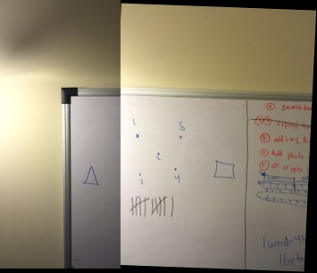
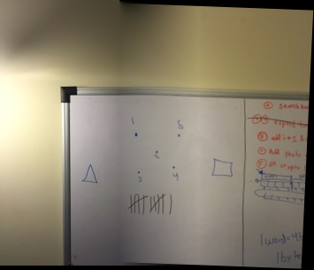
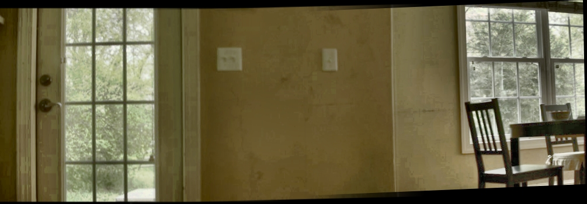

Panorama Stitching and Blending
The Method
The goal in this assignment was to take multiple photographs with different exposures, combine them into multiple HDR images, and then to build off the code from the previous assignment, in which we calculated a homography matrix, to combine and blend these HDR photographs.
The high level methodology for achieving this involved 4 main steps:
- Combine multiple exposures into HDR images
-
Construct a 3x3 homography matrix
Has elaborated upon in the previous assignment. -
Apply the
Hmatrix to the input images, and do so multiple times in the case that there are more than two images. - Blend the transformed images in the panorama together using Gradient Domain Blending.
Implementation
Method
-
I begin by loading 9 files to create 3 HDR images using matlab's
makehdr()function. -
After loading the source images, I prompt the user for corresponding points in the left image and the center image. I organize the points from each image into an
nx2matrix. -
Next, I call a function
calculateH(points1, points2)to calculate the homography matrix and apply the matrix to both images. -
The next step is to blend the overlapping area of the two images using gradient domain blending. The blending itself is done on a gradient so that the gradients on each side of the overlapping area match their adjacent photos.
- I calculate the x range of the overlapping area by considering the width of the left image and the horizontal tranzlation specified in the homography matrix. This method avoids having to prompt the user for more interaction.
- I then implement gradient domain blending in the same way as discussed in assignment 2. However, instead of using an alpha mask to dictate where to blend, I use the x range discussed above.
- Finally, I repeat the above 4 steps. The second time through, I use the combined and blended left and center image and the right image instead of the left and center images.
-
The following result is composed of just 2 images, but is the clearest example of succesful gradient domain blending.
-
These are the two raw images:


-
This is the two images with the homaography matrix applied, but no blending:
 -
Finally, this is the panorama with gradient domain blending:

-
These are the two raw images:
-
This example contains 3 HDR images
-
The constituent images are:


-
This is the final result with the 9 raw images comined into 3 HDR images, transformed, and blended.

-
The constituent images are:
Conclusion
I have successfully created and blended panoramas from both two and three images. The poor image quality and color of the 3 image panorama is due to makehdr() returning a matrix of single values instead of double or uint8.